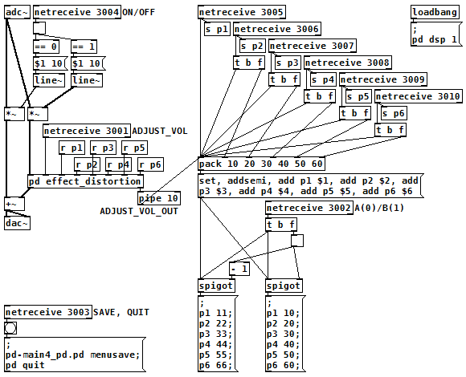

RasPd4 プログラミング編
2018年02月23日 カテゴリー：Raspberry Pi
各設定についてはRasPd2 ソフトウェア編と同じですが、今回はオーディオ設定の入出力音量を操作していないので、alsamixerのMasterとCaptureのdB gainは両方0となっています。内部プログラムは2チャンネルのディストーションエフェクトです（2025年05月16日データ削除）。
▽コントロール割り当て
左側LED： エフェクトオン時点灯、チャンネル切替モード時点滅
中央LED： Aチャンネル選択時点灯
右側LED： Bチャンネル選択時点灯
左側スイッチ： バイパス音とエフェクト音を同じ音量に合わせる機能
中央スイッチ： チャンネル切替
右側スイッチ： 2秒長押しでシャットダウン
各ポット： エフェクトパラメータ（自動保存されている）
フットスイッチ： 2秒長押しで通常モードとチャンネル切替モードを変更、通常モード時はエフェクトオン・オフ切替、チャンネル切替モード時はチャンネル切替
なかなかプログラミングが面倒でしたが、完成すると大したことはしていない感じです。フットスイッチに長押し機能を持たせた関係で、スイッチを押した時ではなく離した時に切替が働く形になり、少し違和感は残っています。
一つ原因不明の問題があり、バックグラウンドでPure Data(Pd)が起動状態のとき、立ち下がりエッジ検出で定義したコールバック関数がたまに立ち上がりエッジでも呼び出されるという現象が起こりました。どう調べてもスイッチのチャタリングではないようです。とりあえず呼び出される関数に「対象GPIOピンがLOW(0)」という条件を追加して対策しています。
▽Pdパッチ

なぜか今回は[spigot~]でエフェクトオン・オフを切り替えるとプツっとノイズが出るため、Isaac(139)さんの[pd spigot~]に[line~]を入れたものを使っています。[pd effect_distortion]の中身の表示は省略しましたが、前々回の記事のオーバードライブのトーン部分を変更したものが入っています。2チャンネル程度ならエフェクトをまるごとコピーすれば簡単ですが、今後の応用を考えてPdのメッセージ機能を使うことにしました。終了時にこのパッチ自体を上書き保存するため、外部ファイル操作はしていません。参考ページ→PureDataで値のプリセットを外部ファイルで管理する方法
エフェクトパラメータの取得は、RasPd2と同じでMCP3008を使っています。0.2秒ごとに0.0から100.0までの値を取得しますが、ノブを触らなくてもたまに値がブレることがあるようです。勝手に値が変わるとPdパッチに記録しているデータも変化して困る場合があるので、1以上変化しないとPythonからPdへ値を送信しないようしています。すごくゆっくりとポットを動かしたときはパラメータが変化しないことになってしまいますが、実用上は問題ないでしょう。
▽Twitter動画（そのうち消えるかもしれません）
RasPd4に2ch歪みエフェクトを入れてみました。
— 可燃ごみ箱 (@kanengomibako) 2018年2月12日
バイパス→エフェクトON→フットスイッチ長押しでチャンネル切替モード→チャンネル切替#RaspberryPi #自作エフェクター #Python #PureData pic.twitter.com/tuqGTLrRVt
RasPd4 ハードウェア編へ